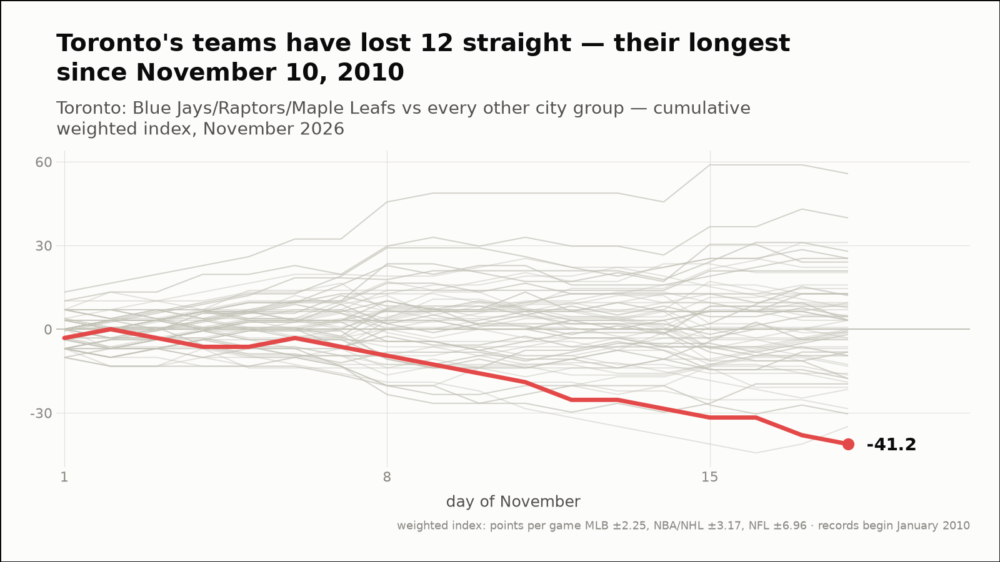
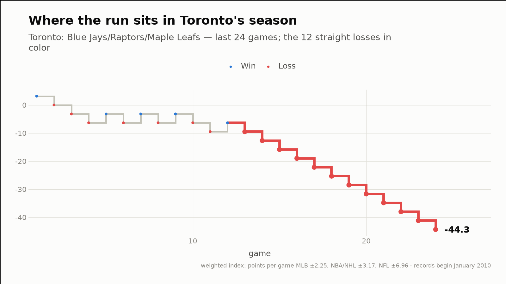
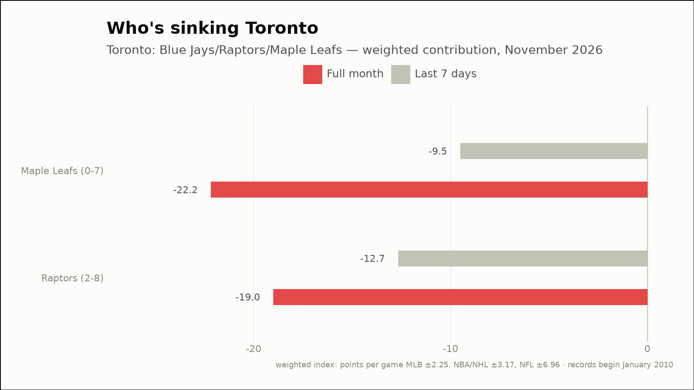

Toronto's teams have lost 12 straight — their longest since November 10, 2010
Toronto: Blue Jays/Raptors/Maple Leafs
- The run
- 12 straight losses since November 7, 2026, -38.0 weighted (previous best 12)
- This month (through November 18)
- 2-15, -41.2 weighted
- Last 7 days
- 0-7, -22.2 weighted
- Driving it this week
- Raptors (0-4, -12.7)
- Active streaks
- Raptors L6, Maple Leafs L7


